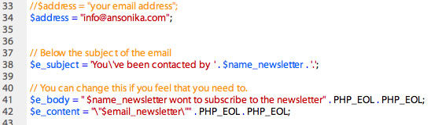

Documentation by “Ansonika” v1.0
“PLANAR - Personal trainer HTML site template”
Created: 08/10/20113
By: Ansonika
Email: info@ansonika.com
Thank you for purchasing my theme.
Table of Contents
- HTML Structure
- CSS Files, Structure and basic modifications
- PHP contact form, newsltetter form and plan a visit form
- PHOTOSHOP files
- JavaScript
- Sources and Credit
A) HTML Structure - top
This theme has a fixed centered layout 1170px. It's based on Boostrap 3 framework grid. It's ULTRA RESPONSIVE!!
It' comes with a dark and light version. If you wont to change the colors, i've create a css file color.css only as reference located inside the css folder in the light version....Here you will find the classes that could be changed in color.
B) CSS Files Structure and basic modfication - top
The css files are inside the css folder.
- bootstrap.css: The framework (not necessary to open/edit)
- bootstrap.min.css: The framework minified (not necessary to open/edit)
- menu.css: All the styles about menu
- socialize-bookmarks.css: Socials Icons
- font-awesome.css: Icons
- animate.css: Animation css3 effects
- flexslider.css: All about the homepage slider
- style.css: all layout styles (mediaqueries included)
To modify colors, typografy, button style ecc....find the realtive commen line in base.css. Below how the file is organized:
STYLE.CSS STRUCTURE:
1. SITE STRUCTURE and TYPOGRAPHY
2. PAGES AND CONTENT
3. COMMON
4. MEDIA QUERIES
Change the logo
To change the logo, simply use your PNG24 file. Keep in mind that there is a smaller version for mobiles and :
Suggested size widht 240x height 35px
Suggested size widht 35px height 35px
Change the Font Family with Google web fonts
By default this theme use Open Sans,
<link href='http://fonts.googleapis.com/css?family=Open+Sans:400,600,700,800,300' rel='stylesheet' type='text/css'>
but as you can use every Google web font you like. Just take the line of code from the Google site (like the example above), open style.css and change the font in the body selector. Better is if you choose a font family with the same font weight style....so you don't need to modify any more font css style.
Add a slide to the slider
Simply duplicate this part of code and change the caption and the jpg filename. You can optionally remove the caption.
.... <li>
<img src="img/slider/slide-3.jpg" alt="">
<p class="flex-caption">Lose weight in a short time</p>
</li>
....
Change the button colors, and main typography styles
It's all placed at the top of styles.css under the section 1.SITE STRUCTURE and TYPOGRAPHY:
/** Typography **/ ........ /** List **/Change the Youtube video
..... /** Links **/
..... /** Buttons **/
..... etc...
Simply change the code in bold ....tha is the ID of your video
<iframe width="640" height="360" src="http://www.youtube.com/embed/NAuxkXR2huM" allowfullscreen></iframe>
Use the fancybox viewer/modal window for a large version of a picture
Below an example code
<a href="img/gallery/1.jpg" class="fancybox" title="Your caption"></a>
Spacing and margins
If you need to change spacing or margins i've created these classe that can be useful (located in style.css)
.add_top_30{
margin-top:30px;
}
.add_top_15{
margin-top:15px;
}
.add_bottom_30{
margin-bottom:30px;
}
.add_bottom_15{
margin-bottom:15px;
}
THE GRID
Please refer to this documentation Boostrap
Font AWESOME Icons
Font Awesome gives you scalable vector icons that can instantly be customized — size, color, drop shadow, and anything that can be done with the power of CSS. Font Awesome icons are vectors, which mean they're gorgeous on high-resolution displays.
Full list reference icons available. See the example below on how to use in your pages:
<i class="icon-camera-retro"></i> icon-camera-retro <p><i class="icon-camera-retro icon-large"></i> icon-camera-retro</p> <p><i class="icon-camera-retro icon-2x"></i> icon-camera-retro</p> <p><i class="icon-camera-retro icon-3x"></i> icon-camera-retro</p> <p><i class="icon-camera-retro icon-4x"></i> icon-camera-retro</p>
C) PHP files: Newsletter, Contact form and Suggest to a friend - top
All the files you need are located in asset folder. If you need to change the allert messages open assets/validate.js. Below an example taken from newsletter.php; all the files are well commented.

Contact form and suggest to a friend
It's the same logic and script of check newsletter. If you doesn't recieve the email please first check:
1) Your spam folder
2) If you hosting requires special settings
3) If your email has to be managed from the same hosting provider
4) Set the permission of the asset folder on your host to 777 with your FTP client
D) Photoshop files - top
Here a list of the psd and eps files provided:
E) JavaScript - top
This theme use These Javascript.
E) Sources and Credits - top
I've used the following images, icons or other files as listed.
- Twitter Boostrap
- Font Awesome
- Jquery easing
- Respond (media queries for IE7-IE8)
- Moderniz
- Fancybox viewer
- Jquery
- Flex slider
- Superfish menu
- Fit vids
- Place holder
- Inview.js
Images are not included. You can buy them on Photodune or Flickr.

Once again, thank you so much for purchasing this theme.
Need support?
For support contact me at info@ansonika.com. You will receive an answer within 24-48 hours (working days) GMT +1.- I only provide support for fixing bugs or small issues on my items.
- I don't provide free support for additional custom modifications to the items.
- Please provide your site link, screenshots and other information about your issue.
Need customization or availability for freelance projects?
Just send an email via profile page form; please don't forget to specify:- if you are a company, agency or private user
- all the information about your projects, needs, site urls, project sheet, etc..
- from which country you are
- if you have a deadline
- if you have basic knowledge of HTML , CSS, JS, PHP